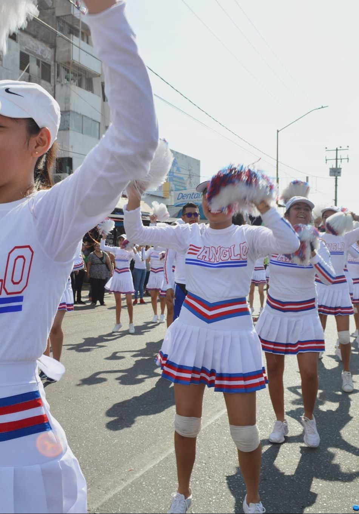

Desfile
- "Este desfile se llevo a cabo en conmemoracion al 20 de Noviembre, por la Revolución Mexicana,Fue un recorrido donde distintas instituciones educativas asistieron, presentando un numero artístico.
- Mi escuela realizó 3 bailes dintintos, en el ultimo baile, a mi me tocó hacer piruetas gimnasticas.
- Fue un evento muy lindo, debido a la gran cantidad de personas que desfila y sobre todo por el esfuerzo que cada instituto pone en sus bailes.
- El recorrido fue desde el chumari, hasta el palacio municipal, todos terminamos cansados, pero valió la pena las horas de ensayo y el tiempo de recorrido.